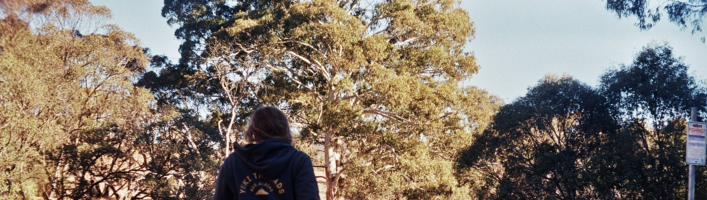
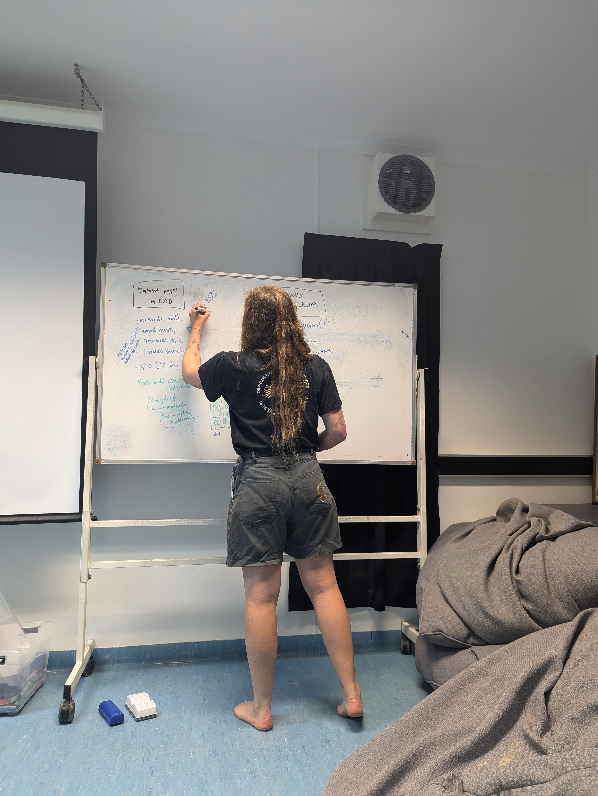
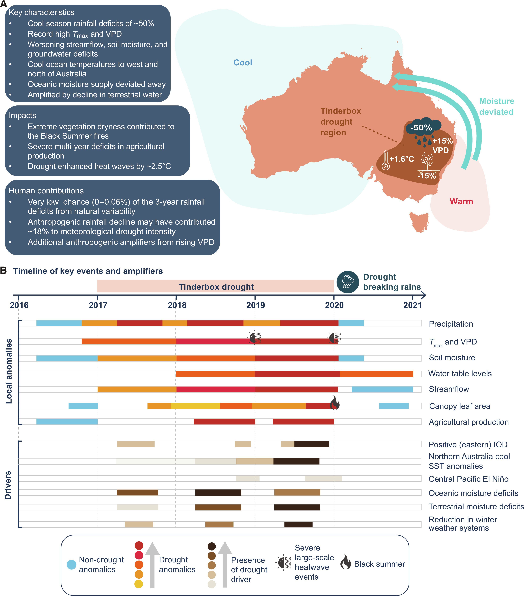

I am a climate scientist. I try to understand what Earth’s climate would look like now, if not for human activities like greenhouse gas and aerosol emissions. Part of that involves understanding modern climate dynamics. Another part involves studying climate variability in the time before the Industrial Revolution. Figuring out the difference between those two things helps us to understand how and why Earth’s climate is changing today, and hence how it might change in the future.
A big part of my work is developing creative numerical methods to extract new information from existing data. I use these methods to combine information from weather observations, climate model simulations, and natural archive of climate through the centuries, like ice cores and tree rings (we call these “palaeoclimate proxies”). Combining all this different information lets me develop a holistic understanding of Earth’s climate variability.
I am particularly interested in the water cycle. One of the main tools I use to understand the water cycle is the isotopic composition of water. That is, the ratio of 18O to 16O and 2H to 1H in rain, snow, lake water, river water, ice, and seawater.
I am currently a postdoctoral fellow in the Research School of Earth Sciences at the Australian National University, working with the ARC Centre of Excellence for Climate Extremes. Before that, I was a postdoctoral researcher at Washington University in St. Louis.
Aside from climate science, my interests are many and varied: some edited highlights include swimming, cross country skiing, telemark skiing, surf lifesaving, reading fantasy novels, taking bad photos with old film cameras, using the Oxford comma, and playing guitar & violin.

News
24 AUGUST 2024
A very exciting announcement - I was lucky enough to be awarded an Australian Research Council DECRA fellowship. This major grant will support my research over the next three years, using multiple information sources to quantify Australia’s long-term rainfall risk.
This fellowship will allow me the freedom to keep pushing the boundaries of my particular flavour of (palaeo)climate science - blending information from climate models, weather observations, and palaeoclimate proxy data to allow a holistic understanding of the water cycle and how it’s changing with human-caused climate change.
After a few years spent mainly developing new numerical methods for understanding climate change, I’m excited to get back in the lab and produce some new water isotope data, as well as trying my hand at isotope dendrochronology 🌲 💍 To complete the trifecta, I’ll also (shockingly, to those who know me) produce new model simulations investigating the effect of Indo-Pacific SST variability on Australian hydroclimate.
My DECRA success was, of course, due in large part to the many people who generously provided advice and/or feedback on my application - many thanks to all of you.
More information about the 2025 DECRA round is available here and here, with the funded projects list available here.

Here I am planning science how I plan it best - at a whiteboard. This particular whiteboard is in the lecture room at James Cook University’s Orpheus Island Research Station - where every year I’m lucky enough to co-teach a coral reef field studies course. I used this whiteboard in 2023 to sketch out the plans for my proposal, and then again one year later to start planning my first pocket of DECRA science..
28 MARCH 2024
Out today in Hydrology and Earth System Sciences is our assessment of multi-year droughts in climate model simulations of the last millennium.
We looked at Australian drought characteristics in 11 climate models, including how simulated droughts in pre-Industrial times compared with 20th century droughts. We found that on average, droughts in SE and SW Australia are getting longer.
But also, natural variability in Australian rainfall could bring 20+ year droughts - including to the food bowl of Australia (the Murray-Darling Basin).
We also show that the short observational era isn’t long enough to get the full picture around the statistics of multi-year droughts - highlighting the need for more targeted palaeoclimate data.
Read the paper here and please feel free to get in touch with any questions.
6 MARCH 2024
Just published in Science Advances: our extremely comprehensive analysis of the development, drivers, and impacts of south-eastern Australia’s 2017-2019 ‘Tinderbox’ Drought - the one that set the conditions for the 2019 Black Summer fires.
The paper is the culmination of a glorious collaboration between the ARC Centre of Excellence for Climate Extremes’ finest drought scientists, and covers everything from agriculture and vegetation impacts to remote drivers and climate change contribution.
Particularly nice is the graphic below (Fig. 10 in the paper), which summarises the characteristics, drivers, and impacts of the Tinderbox Drought (see paper for a full description of the graphic).

22 DECEMBER 2023
On a related note to my last update, I’ve just had a piece published in the science poetry journal Consilience. Here’s a link straight to my poem, or click below to let me read it out aloud for you.
24 NOVEMBER 2023
At the recent ARC Centre of Excellence for Climate Extremes annual workshop, I dashed out a little sonnet to summarise some of my research into Australian drought variability. Here’s the poem, if you are curious (and hopefully it inspires to write some science poetry of your own!)
2 NOVEMBER 2023
Excited to announce that the first global synthesis of 2000 years of water isotope variability has just been published in Nature Geoscience. This is the culmination of NINE (ish) years of hard work by an incredible group of people, led by the indefatigable Bronwen Konecky. Data and code available via link in the paper.
26 AUGUST 2023
I worked with the amazing media advisors at the ARC Centre of Excellence for Climate Extremes to produce some videos explaining some of my recent climate research. Here is a little explainer about one of my favourite parts of the global climate system - the Pacific Walker Circulation.
23 AUGUST 2023
Just out! My new reconstruction of 800 years of variability in the Pacific Walker Circulation. The paper is available fully open access from Nature. Reconstruction dataset and code to reproduce the figures is available from this Zenodo repository. Please get in touch if you have any questions!
Falster, G., N. Wright, N. Abram. A. Ukkola, B. Henley. 2024. “Potential for historically unprecedented Australian droughts from natural variability and climate change”. Hydrology and Earth System Sciences28: 1383-1401. Link to publication.
Devanand, A., G. Falster, Z. Gillett, S. Hobeichi, C. Holgate, C. Jin, M. Mu, T. Parker, S. Rifai, K. Rome, M. Stojanovic, E. Vogel, N. Abram. G. Abramowitz, S. Coats, J. Evans, A. Gallant, A. Pitman, S. Power, S. Rauniyar, A. Taschetto, A. Ukkola. 2024. “Australia’s Tinderbox Drought: an extreme natural event likely worsened by human-caused climate change”. Science Advances10: eadj3460. Link to publication.
Konecky, B., N. McKay, Falster, G., S. Stevenson, M. Fischer, A. Atwood, D. Thompson, M. Jones, K. DeLong, J. Tyler, B. Martrat, E. Thomas, J. Conroy, S. Dee. L. Jonkers, O. Curakova (Sidorova), Z. Kern, T. Opel, H. Sayani, Iso2k Project Members. 2023. “Globally coherent water cycle response to temperature change during the past two millennia”. Nature Geoscience16: 997-1004. Link to publication.
Falster, G., B. Konecky, S. Coats, S. Stevenson. 2023. “Forced changes in the Pacific Walker Circulation over the past millennium”. Nature662: 93-100. Link to publication.
Churakova-Sidorova, O., V. Myglan, M. Fonti, O. Naumova, A. Kirdyanov, I. Kalugin, V. Babich, G. Falster, et al. 2022. “Modern aridity in the Altai-Sayan mountain range derived from multiple millennial proxies.” Scientific Reports12(1): 1-10. Link to publication.
Falster, G., B. Konecky, M. Madhavan, S. Coats, S. Stevenson. 2021. “Imprint of the Pacific Walker circulation in global precipitation δ18O”. Journal of Climate34(21): 8579-8597. Link to publication.
Konecky, B., N. McKay, O. Churakova (Sidorova), L. Comas-Bru, E. Dassié, K. DeLong, G. Falster, et al. 2020. “The Iso2k Database: A Global Compilation of Paleo-δ18O and δ2H Records to Aid Understanding of Common Era Climate.” Earth System Science Data. Link to publication.
Falster, G., S. Delean, J. Tyler. 2018. “Hydrogen Peroxide Treatment of Natural Lake Sediment Prior to Carbon and Oxygen Stable Isotope Analysis of Calcium Carbonate.” Geochemistry, Geophysics, Geosystems19(9): 3583–95. Link to publication.
Falster, G., J. Tyler, K. Grant, J. Tibby, C. Turney, S. Löhr, G. Jacobsen, A. P. Kershaw. 2018. “Millennial-Scale Variability in South-East Australian Hydroclimate between 30,000 and 10,000 Years Ago.” Quaternary Science Reviews192: 106–22. Link to publication.
Collins, Alan., S. Patranabis-Deb, E. Alexander, C. Bertram, G. Falster, R. Gore, J. Mackintosh, et al. 2015. “Detrital Mineral Age, Radiogenic Isotopic Stratigraphy and Tectonic Significance of the Cuddapah Basin, India.” Gondwana Research28(4): 1294–1309. Link to publication.
In review
Falster, G., S. Coats, N. Abram. “How unusual was Australia’s 2017-2019 Tinderbox Drought?” In review at Weather and Climate Extremes”
Cho, P., G. Falster, D. Bolster, M. Berke, M. Müller: Influence of the Indian Walker Circulation on δ18OP and precipitation variability in the Indian Ocean Basin. In review at Geophysical Research Letters.
In the works
Conference Proceedings
You can read a filtered version of this in my CV if you’re interested
I combine information from modern observational data, palaeoclimate proxy data, and model simulations to better understand the dynamics and drivers of Australian drought.
Previous Affiliation
Postdoctoral research associate
Washington University in St. Louis
I used water isotope observations, proxy records, and model simulations to investigate forced and internal variability in ocean-atmosphere circulation.
Education
PhD (awarded April 2019)
The University of Adelaide, Australia
Advisors: Dr Jonathan Tyler, Dr John Tibby
Thesis title: Reconstructing Australia’s late Quaternary climates
from the geochemistry of lake sediments and snail shells.
Awarded Dean’s Commendation for Doctoral Thesis Excellence